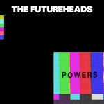
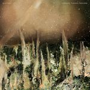

Quick Takes (August 2019)
Hello, and welcome to our latest installment of Quick Takes!
I have to say that August and September (so far) have been two of the best months in terms of music releases. We've covered many of them in the main reviews section, so make sure to give those a read. In the meantime, this month's feature is a little bit different. We've got two longer-than-usual takes by regular contributors Mark and Kirk, both positive takes on Ty Segall and Belle and Sebastian (we normally cover the month prior, but I felt like sneaking in a new release this time). As for myself, I was very happy with The Futureheads' comeback album—as well as the new Pete Yorn, an artist we've covered numerous times throughout the years. And if you've felt that our regular QT's are showered in 6's and 7's, well you'll be happy to find out that this one has a couple of low scores. I'll let you all figure out which ones they are.
What were your favorite albums during the month of August? Anything we didn't get to review that we should've? You can always reach us on Facebook, or on our official twitter page. - Juan
...
 Belle and Sebastian
Belle and Sebastian
Days of the Bagnold Summer
(Matador)
For their tenth studio album, Belle and Sebastian have produced the soundtrack to the film Days Of The Bagnold Summer. The movie, directed by Simon Bird, is an adaptation of Joff Winterhart’s graphic novel of the same name. The story (and thus the songs) revolve around the relationship between divorcee Sue Bagnold and her fifteen-year-old son Daniel. Unexpectedly spending a pivotal summer together, Sue works as a librarian and Daniel is contrasted as a heavy metal-loving teen. Inspired by B&S leader Stuart Murdoch’s read of the novel, the soundtrack thankfully veers more towards the bibliophile than the head-banger. Two B&S classics are re-worked, including a spritely updating of the perfect fitting I Know Where The Summer Goes as well as more of a straight read of Get Me Away From Here I’m Dying. The songs range from topics of coming of age (the gentle I’ll Keep It Inside) to coming to terms (the downcast Did The Day Go Just Like You Wanted). The best of the new tracks, Sister Buddha, is delivered in a hi-hat snare and piano-driven take as well as a crisply acoustic instrumental version to open the album. Both have a strong sentimental strain that share a melodic line with Guy Clark’s L.A. Freeway—and they'll tug at the heartstrings. The tip-toed walk through the lounge-y bossa nova of This Letter harbors a pledge to move forward “although the world is fucked according to the news.” While the closing instrumental We Were Never Glorious is glorious in its hymn-like and regal use of piano and wordless harmonies; that is, except for the fact that it is marred mid-song with dialogue snippets from the movie. Thankfully, it's the only track on which that happens. At his most narrative, there is no doubt that Days Of The Bagnold Summer provided Murdoch with a much-needed muse to follow. [7/10] Mark Moody
Clairo
Immunity
(Fader Label)
Let's get the controversy out of the way, first: to give Claire Cottrill (aka Clairo) a hard time because of her connections with the music industry is besides the point (newsflash: half of the faux-disaffected indie artists you listen got their leg up through similar means). And frankly, I find the transparency refreshing. What I take into offense, though, if how the viral sensation's bland and hollow debut, Immunity, managed to get so much attention in the first place. Mind you, her hodgepodge of musical influences, from boom-bap and neo-soul to indie rock, showcase an artist who genuinely approaches the music she emulates like discovering an algorithmic Spotify playlist. And when she's on, she's really on: relatable heart-tuggers like Bags and North serve reverb-laden, uptempo anthems accompanied with sumptuous choruses (even if her voice sounds flatter than an iron board). But ultimately, Cottrill's clear songwriting focus gets bogged down with mellow, listless ballads that sound pleasant—and not much else. [5/10] Juan Edgardo Rodríguez
The Futureheads
Powers
(Nul Records)
Rather than fake a breakup or try to capitalize on a niche audience, The Futureheads just disappeared. During almost the entirety of the 2010s, the Sunderland quartet had a genuine reason to go on hiatus—frontman Barry Hyde dealt with many facets of mental illness (fascinatingly documented on his spare, piano-driven 2016 solo album, Malody). But there was always a lingering suspicion that the post-punk harmonizers hadn't sung their last tune—and in Powers, their sixth album, they enter a new chapter conveying their typically joyous nature. The Futureheads were never ones to wind down, after all—on songs like Jekyll and Electric Shock, Hyde points to different traumatic periods, charged with a bristling fury that complements his lyrical growth. Guitarist Ross Millard is also a driving force on power-pop stompers like Good Night Out and Stranger in a New Town, his lower register increasingly maturing like a younger Paul Weller. And when not delving into personal matters, they dare to get political on Across the Border, an angry, spoken-word treatise that points the finger at those responsible for this Brexit mess. There's a lot to ponder while listening to Powers' dynamic and exuberant contours, coming from a band that's adapting to life's changes with piercing directness. [8/10 - Believe the Hype] Juan Edgardo Rodríguez
 Ty Segall
Ty Segall
First Taste
(Drag City)
Though he comes across as a chill surfer dude, Ty Segall's output is anything but laid back. The multi-instrumentalist has participated in 86 recording projects, from collaborations to cassettes to live shows, spanning almost a dozen different bands. His studio albums, though, are the real gems of his career—the latest being First Taste, an album which will go down as one of Segall's more jubilant outings. The album opens with guitars like chainsaws, Segall's Valkyrie voice, and warbling sirens from outer-space. From there Segall explores kaleidoscopic avenues of folk, psychedelia, and rock, though each path shares a love for both good rhythms (one song layers a 6/8 over 4/4 beat with laser-beam guitars) and a playful nature. This latter quality is manifest by Renaissance Faire sounds like mandolins, wheezing horns, penny whistles, those wooden recorders from Stairway to Heaven, and an impetus to answer an unspoken call for “More BONGOS!” There's even something sounding like kazoo on Segall's requisite canine-themed song, I Worship the Dog. An overwhelming sense of fun pervades First Taste, as further epitomized in a couple of wacky drum solos that are so maniacal they'll bring a smile to your face. All in all, Ty Segall's obviously having fun as a result of being chiefly interested in entertaining himself. As he says on I Sing Them: “I'm not wasting all my time singing other people's rhymes.. ...cause I'd rather sound like me than try to sing your melody.” And amazingly, given his prolific output, he isn't wasting our time, either. [8/10] Kirk Sever
Whitney
Forever Turned Around
(Secretly Canadian)
More of the same can often be a good thing. Just ask Whitney, whose new set of relaxed, carefree soft-rock should bode well for afternoon communal gatherings and rural, Summer music concert series' alike. The Chicago octet's second LP, Forever Turned Around, is practically interchangeable from their debut Light Upon the Lake—and I suppose that's the point. Being chill is a lifestyle that they're capitalizing on, and they wouldn't dare to bring up any negative vibes into your day. See, there's nothing particularly grating about their gentle, country-pop stylings—most of which deal with themes such as nature, gratitude, and fleeting time. And these are all worthy topics to explore—except that every song sounds so gosh darn wholesome that it's as if they discourage against any deeper introspection. Whitney are soulful musicians who, even with their most leisurely, could genuinely inspire their audience's imagination; instead, they'd rather want you to grab a cold one and go with the flow. [4/10] Juan Edgardo Rodríguez
 Pete Yorn
Pete Yorn
Caretakers
(Shelly Music Company)
On Caretakers, Pete Yorn's winsome melodies sound so effortless that they're easy to take for granted. But it wasn't always like this—2016's Arranging Time brought an opportunity for the L.A. singer-songwriter to recapture his essence, a mellower, though more energetic response after an "edgier" partnership with Frank Black (Pete Yorn) and a stodgy recollection of his pop-rock debut that sunk in its soft-hued balladry (Back & Fourth). Mind you, Yorn's seventh-album eddies like a calm, waveless beach—with Day Wave's Jackson Phillips by his side, he opts to add subtly glistening synth tones to his lovelorn acoustic strums. He's long laid to rest his heartland Americana explorations (even if he esteems Tom Petty on I Wanna Be the One), rather embracing the soft shimmer of adult-contemporary with his melancholic, minor-key reflections (Ect, Idols). Yorn loses some of the album's momentum as it progresses, too enamored with its stately flow—but just like any troubadour who calls L.A. home, he still writes some of the most tuneful folk-rock this side of Laurel Canyon. [7/10] Juan Edgardo Rodríguez
17 September, 2019 - 01:42 — No Ripcord Staff